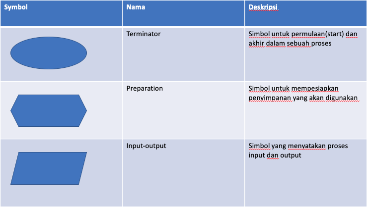
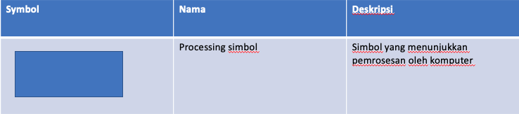
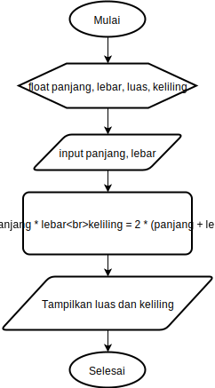
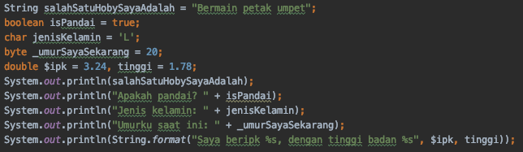
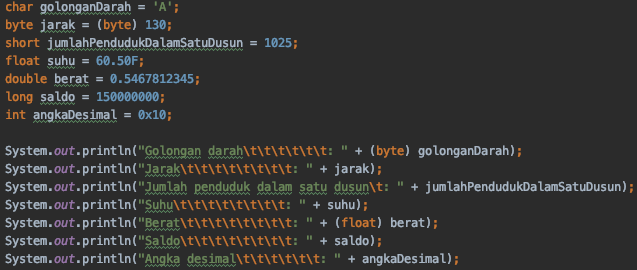
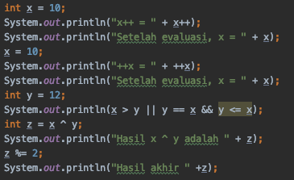

Mahasiswa dapat memahami dan mampu menjelaskan tentang Tipe Data ke pemrograman Java
Mahasiswa dapat memahami dan mampu menjelaskan tentang Variabel pada pemrograman Java
Mahasiswa dapat menerangkan dan mampu menjelaskan tentang Input-output ke pemrograman Java
Mahasiswa dapat mengemukakan dan mampu menjelaskan tentang Sequence ke pemrograman Java
Mahasiswa dapat memahami dan mampu menguraikan tentang Operator ke pemrograman Java
Alat dan Bahan
PC/Laptop
Text Editor (IntelliJ, Netbeans, vscode, Notepad++, dan lainnya)
JDK
Ulasan Teori
Variabel
Variabel adalah tempat untuk menyimpan data. Deklarasi variabel adalah sebuah
perintah agar komputer menyediakan variabel yang akan kita pakai. Pendeklarasian
variabel harus diawali dengan tipe variabel, nama variabel kemudian diakhiri
dengan titik-koma ;.
Bentuk penulisan
<tipe data> <nama> [=nilai awal], nilai dalam tanda [] bersifat optional.
Contoh
int contVariabel;
int contohVar = 34;
Variabel dibagi menjadi 2 jenis yaitu
Variabel lokal: variable yang hanya bisa dikenali pada sub program, pada kesempatan ini seluruhnya masih menggunakan variabel lokal.
Variabel global: variable yang dapat dikenali pada keseluruhan program. Penggunaan variabel global akan dijelaskan lebih detail pada pertemuan yang akan datang.
Dalam memberi nama variabel ada beberapa aturan yang harus dipenuhi, antara
lain:
Diawali dengan huruf atau karakter underscore _
Nama variabel bersifat case sensitive (huruf besar dianggap berbeda dengan
huruf kecil)
Tidak boleh menggunakan spasi (sebagai pengganti dapat digunakan tanda
underscore atau penggunaan huruf besar pada awal kata berikutnya)
Tidak boleh menggunakan karakter khusus seperti <,>,*,?,= dan
sebagainya.
Apabila nama variable lebih dari satu kata maka kata yang setelahnya diawali huruf besar.
Beberapa Keyword yang tidak boleh digunakan sebagai nama variabel:
abstract
default
if
private
this
assert
do
implements
protected
throw
boolean
double
import
public
throws
break
else
instanceof
return
transient
byte
enum
int
short
try
case
extends
interface
static
void
catch
final
long
strictfp
volatile
char
finally
native
super
while
class
float
new
switch
continue
for
package
synchronized
Tipe Data
Tipe data adalah jenis data yang ingin kita simpan di variabel. Tipe data dapat dikategorikan menjadi dua kelompok, yaitu
Tipe data primitive/build in: tipe data bawaan dari sebuah bahasa pemrograman
Tipe data non-primitive/referensi: tipe data yang dibuat berdasarkan kebutuhan programmer
Selengkapnya, tipe data primitive yang bisa dipakai dalam pemrograman Java ada
di tabel berikut ini:
Type
Values
Default
Size
Range
byte
signed integers
0
8 bits
-128 to 127
short
signed integers
0
16 bits
-32768 to 32767
int
signed integers
0
32 bits
-2147483648 to 2147483647
long
signed integers
0
64 bits
-9223372936854775808 to 9223372936854775807
float
IEEE 754 floating point
0.0
32 bits
approximately ±3.40282347E+38F
double
IEEE 754 floating point
0.0
64 bits
approximately ±1.79769313486231570E+308
char
Unicode character
\u0000
16 bits
\u0000 to \uFFFF
boolean
true, false
false
1 bit used in 32 bit integer
NA
Selain harus memperhatikan jenis tipe data yang digunakan, tipe data juga
mempunyai penulisan nilai yang berbeda. Sebagai contoh penulisan nilai tipe data
char harus diapit dengan tanda ' (petik satu). Variabel String harus
menggunakan tanda " (petik dua). Dalam penulisan bilangan pecahan digunakan
tanda . (titik) bukan koma.
Deklarasi Variabel
Secara umum, format deklarasi variabel dapat dinyatakan sebagai berikut:
Contoh:
int bilangan;
byte contohDeklarasiVariabelMenggunakanTipeDataByte;
float volume, luas;
int angka = 1;
float phi = 3.14f;
char kelas = 'A';
String nama = "Joko Sembung";
Mencetak Variabel
Contoh penggunaan fungsi untuk menampilkan nilai variabel di layar command prompt adalah sebagai berikut
System.out.println(nilai);
System.out.println(a);
System.out.println("Nilai Anda adalah "+nilai);
System.out.println("Angka adalah "+a);
System.out.println(a+" angka pertama, "+b+" angkat kedua, "+c+" angka ketiga ");
System.out.println(String.format("%d angka pertama, %d angkat kedua, %d angka ketiga ",a,b,c));
Casting Tipe Data
ketika kita ingin memberikan nilai dari tipe data primitive ke tipe data primitive yang lain. Ada 2 bentuk tipe casting tipe data:
Widening casting(otomatis): mengubah tipe data dari yang ukurannya lebih kecil ke tipe data yang lebih besar
byte -> short -> char -> int -> long -> float -> double
Tipe data non-primitive dibuat berdasarkan kebutuhan programmer. Berbeda dengan tipe data primitive, tipe data non-primitive memiliki nilai awal null sedangkan untuk pendeklarasian tipe data ini hampir sama dengan deklarasi pada tipe data primitif. Ciri yang lain adalah tipe data non-primitive diawali dengan huruf besar dan tipe data referensi adalah kemampuannya menampung banyak nilai.
Contoh:
//Contoh tipe data primitiveint x = 9; //hanya ada 1 nilai yang disimpan, yaitu 9char hurufKu = 'N'; //hanya ada 1 nilai yang disimpan, yaitu karakter N//Contoh tipe data non-primitive
String tulisan = "Aku belajar Java"; //ada 16 nilai, termasuk spasiint[] daftar = { 1, 4, 9, 16, 25, 36, 49 }; //ada 7 nilai bertipe integer
Sequence/Statement
Perintah/statement digunakan untuk memerintahkan komputer untuk melakukan
sesuatu. Contoh, pada program menghitung luas persegi panjang diatas, ada
beberapa statemen:
Perintah panjang = 10; memerintahkan komputer untuk mengisi variabel panjang
dengan nilai 10. Begitu juga dengan perintah lebar = 5;
Perintah luas = panjang * lebar; memerintahkan komputer untuk menghitung
hasil perkalian dari panjang dan lebar, lalu menyimpannya kedalam variabel
luas.
Perintah System.out.println("Luas persegi panjang: " + luas); memerintahkan
komputer untuk menampilkan isi variabel luas ke layar.
Setiap statement harus diakhir dengan titik koma ;, kecuali
statement-statement tertentu seperti if, for, while, class dan
sebagainya.
Keyword import
Digunakan untuk memanggil library/fungsi-fungsi yang telah disediakan oleh
bahasa Java. Perintah import java.util.Scanner; digunakan untuk memanggil
library Scanner yang diperlukan untuk menerima input dari keyboard yang akan
dibahas di bagian input.
Kurung Kurawal
Kurung kurawal berfungsi untuk memberitahu komputer bahwa perintah-perintah di
dalamnya merupakan satu kesatuan. Singkatnya, kurung kurawal digunakan untuk
membuat sekumpulan perintah (compount statement/block).
Output
Setiap program pasti menghasilkan output. Salah satu cara untuk menampilkan output adalah dengan
menampilkannya ke layar. Untuk menampilkan ke layar, ada beberapa cara:
System.out.print(“Hello world”); Perintah ini akan menampilkan kata Hello
world ke layar, atau apapun yang kita tuliskan didalam tanda petik.
System.out.println(“Hello world”); Perintah ini akan menampilkan kata Hello
world ke layar, atau apapun yang kita tuliskan didalam tanda petik, sekaligus
memberi perintah ganti baris di akhir kata/kalimat.
System.out.println(panjang); Perintah ini akan menampilkan isi variabel
panjang ke layar. Perhatikan bahwa untuk menampilkan isi variabel, tidak
perlu menggunakan tanda petik ( “ ).
System.out.println(“Panjang segi empat: “ + panjang); Perintah ini akan
menampilkan kalimat “Panjang segi empat: “ kemudian disambung dengan isi
variabel panjang ke layar. Perhatikan untuk menyambung kalimat dengan isi
variabel, digunakan tanda plus ( + ).
Menampilkan kalimat "Panjang segi empat" dan disambung dengan isi variabel
panjang
int panjang = 10;
System.out.println("Panjang segi empat: " + panjang);
Hasil
Panjang segi empat: 10
Pada output program terdapat beberapa karakter khusus. Karakter-karakter ini
dikenal dengan istilah escape sequence. Karakter-karakter yang umum digunakan
dapat dilihat pada tabel berikut ini:
Escape Sequence
Keterangan
\n
baris baru
\
Karakter backslash
%%
Karakter %
\t
Karakter tab
\"
Karakter "
Input
Untuk membaca input dari keyboard, pertama-tama kita pastikan bahwa library
Scanner sudah kita sertakan. Caranya adalah dengan menuliskan perintah import
java.util.Scanner; di baris paling atas dari kode program kita. Selanjutnya
kita tuliskan perintah deklarasi scanner berikut ini didalam fungsi main():
Scanner sc = new Scanner(System.in);
Selanjutnya, tergantung dari jenis input yang akan kita masukkan, berupa
bilangan bulat (int), bilangan koma (float/double), atau karakter (String).
Jika input berupa bilangan bulat, maka perintahnya adalah: nextInt();
Jika input berupa bilangan koma, maka perintahnya adalah: nextFloat();
Jika input berupa teks, maka perintahnya adalah: nextLine();
Contoh:
Input berupa bilangan bulat:
import java.util.Scanner;
classHello{
publicstaticvoidmain(String args[]){
Scanner sc = new Scanner(System.in);
int usia;
System.out.print("Masukkan usia anda: ");
usia = sc.nextInt();
System.out.print("Usia anda adalah: " + usia);
}
}
Hasil
Masukkan usia anda: 20
Usia anda adalah 20
Input berupa dua buah bilangan:
import java.util.Scanner;
classHello{
publicstaticvoidmain(String args[]){
Scanner sc = new Scanner(System.in);
int panjang, lebar;
System.out.print("Masukkan panjang: ");
panjang = sc.nextInt();
System.out.print("Masukkan lebar: ");
lebar = sc.nextInt();
System.out.print("Nilai dari panjang: " + panjang);
System.out.print("Nilai dari lebar: " + lebar);
}
}
Hasil
Masukkan panjang: 15
Masukkan lebar: 7
Nilai dari panjang: 15
Nilai dari lebar: 7
Operator
Operator merupakan simbol yang biasa digunakan dalam menulis suatu penyataan (statement) dalam bahasa pemrograman apapun. Operator akan melakukan suatu operasi terhadap operand sesuai dengan fungsinya. Jenis-jenis operator adalah sebagai berikut
Operator Aritmatika
Operator Increment dan Decrement
Operator Assignment
Operator Relasi
Operator Logika
Operator Bitwise
Operator Aritmatika
Arithmatic operator (operator aritmatika) adalah operator yang berfungsi untuk operasi aritmatika.
Nama
Simbol
Contoh
Penjumlahan
+
a + b
Pengurangan
-
a - b
Perkalian
*
a * b
Pembagian
/
a / b
Sisa Bagi
%
a % b
Contoh penggunaan:
int a = 6, b = 3;
System.out.println(a+b); //hasilnya 9
System.out.println(a-b); //hasilnya 3
System.out.println(a*b); //hasilnya 18
System.out.println(a/b); //hasilnya 2
System.out.println(a%b); //hasilnya 0
Operator Increment dan Decrement
Digunakan untuk menaikan atau menurunkan suatu nilai integer (bilangan bulat) sebanyak satu satuan, dan hanya dapat digunakan pada variabel
Nama
Simbol
Contoh
Post increment
++
a++
Pre increment
++
++a
Post decrement
--
a--
Pre decrement
--
--a
Contoh penggunaan:
int a = 6;
System.out.println(a++); //hasilnya 6
System.out.println(++a); //hasilnya 8
System.out.println(a--); //hasilnya 8
System.out.println(--a); //hasilnya 6
Operator Assignment
Operator assignment dalam Java digunakan untuk memberikan sebuah nilai ke sebuah variabel. Operator assignment hanya berupa =.
Nama
Simbol
Contoh
Pengisian Nilai
=
a = b
Pengisian dan Penambahan
+=
a += b
Pengisian dan Pengurangan
-=
a -= b
Pengisian dan Perkalian
*=
a *= b
Pengisian dan Pembagian
/=
a /= b
Pengisian dan Sisa bagi
%=
a %= b
Contoh penggunaan:
int a, b;
a = 6;
b = 3;
System.out.println(a); //hasilnya 6
a += b;
System.out.println(a); //hasilnya 9
a -= b;
System.out.println(a); //hasilnya 6
a *= b;
System.out.println(a); //hasilnya 18
a /= b;
System.out.println(a); //hasilnya 6
a %= b;
System.out.println(a); //hasilnya 0
Operator Relasi
Operator relasi dalam Java digunakan untuk menghasilkan nilai boolean yang sering digunakan untuk mengatur alur jalannya sebuah program. Nilai yang dihasilkan dari operator ini adalah true atau false.
Operator ini digunakan untuk ekspresi logik yang menghasilkan nilai boolean, true atau false.
Nama
Simbol
Contoh
Logika AND
&&
a && b
Logika OR
||
a
b
Logika NOT
!
! a
Contoh penggunaan:
boolean a = true, b = false;
System.out.println(a && b); //hasilnya false
System.out.println(a || b); //hasilnya true
System.out.println(!a); //hasilnya false
Operator Bitwise
Operator ini digunakan untuk melakukan manipulasi bit dari sebuah bilangan.
Nama
Simbol
Contoh
AND
&
a & b
OR
|
a
b
XOR
^
a ^ b
Negasi/kebalikan
~
~a
Left Shift
<<
a << b
Right Shift
>>
a >> b
Left Shift (unsigned)
<<<
a <<< b
Right Shift (unsigned)
>>>
a >>> b
Contoh penggunaan:
int a = 60; //ubah ke biner 00111100int b = 13; //ubah ke biner 00001101int c = 0;
/* 00111100
00001101
a & b = 00001100*/
c = a & b;
System.out.println(c); //hasilnya 12/* 00111100
00001101
a | b = 00111101*/
c = a | b;
System.out.println(c); //hasilnya 61/* 00111100
00001101
a ^ b = 00110001*/
c = a ^ b;
System.out.println(c); //hasilnya 49/* 00111100
!a = 11000011*/
c = ~a;
System.out.println(c); //hasilnya -61/* 00111100
a << 2 = 11110000*/
c = a << 2;
System.out.println(c); //hasilnya 240/* 00111100
a << 2 = 00001111*/
c = a >> 2;
System.out.println(c); //hasilnya 15
c = a >>> 2;
System.out.println(a >>> 2); //hasilnya 15
Flowchart
Flowchart merupakan sebuah bagan dengan symbol-symbol tertentu yang digunakan untuk menjelaskan urutan proses dan
hubungan antar proses lainnya pada sebuah program.
Simbol-simbol flowchart


Simbol-simbol flowchart
Contoh flowchart
Flowchart untuk menghitung luas dan keliling bangun datar, persegi panjang.

Contoh flowchart
Langkah Praktikum
Ikuti langkah-langkah praktikum berikut ini.
Praktikum 1
Buka teks editor
Buat file baru, beri nama ContohVariabel.java
Tuliskan struktur dasar bahasa java yang berisi fungsi main().
Tuliskan kode di bawah ini pada public static void main(String args[])

Contoh penggunaan variabel
Jalankan kode program yang telah Anda buat kemudian amati hasilnya.
Pertanyaan
Silakan Anda ubah nama variabel sehingga model penamaan variabel menjadi baik dan benar!
Jalankan kembali kode yang telah Anda buat kemudian amati hasilnya.
Praktikum 2
Buka teks editor
Buat file baru, beri nama ContohTipeData.java
Tuliskan struktur dasar bahasa java yang berisi fungsi main().
Tuliskan kode di bawah ini pada public static void main(String args[])

Contoh penggunaan tipe data
Jalankan kode program yang telah Anda buat kemudian amati hasilnya.
Pertanyaan
Mengapa ketika menampilkan nilai golonganDarah hasilnya bukan A?
Maksud sintak byte jarak = (byte) 130 apa? kemudian mengapa ketika ditampilkan hasilnya berubah?
Pada float suhu = 60.50F;, silakan hilangkan F kemudian jalankan kembali. Apa yang terjadi?
Mengapa ketika menampilkan nilai berat, hasilnya berubah?
Maksud inisialisasi 0x10 pada variabel angkaDesimal digunakan untuk apa?
Praktikum 3
Buka teks editor
Buat file baru, beri nama ContohOperator.java
Tuliskan struktur dasar bahasa java yang berisi fungsi main().
Tuliskan kode di bawah ini pada public static void main(String args[])

Contoh penggunaan operator
Jalankan kode program yang telah Anda buat kemudian amati hasilnya.
Pertanyaan
Jelaskan menurut pendapat Anda perbedaan antara x++ dan ++x?
Berapa hasil dari int z = x ^ y;, silakan dilakukan perhitungan secara manual!
Praktikum 4
Buat file baru beri nama Segitiga.java
Amati flowchart program untuk menghitung luas segitiga berikut ini:
Flow chart segitiga
Buatlah struktur dasar program Java yang terdiri dari fungsi main().
Tambahkan library Scanner
Buat deklarasi Scanner.
Buat variabel int untuk alas dan tinggi, kemudian variabel float untuk luas.
int alas, tinggi;
float luas;
Tuliskan perintah untuk menginputkan alas dan tinggi:
System.out.print("Masukkan alas: ");
alas = sc.nextInt();
System.out.print("Masukkan tinggi: ");
tinggi = sc.nextInt();
Tuliskan perintah untuk menghitung luas segitiga berikut ini:
luas = alas * tinggi / 2;
Tampilkan isi variabel luas
System.out.println("Luas segitiga: " + luas);
Lakukan kompilasi dan jalankan program. Amati apa yang terjadi.
Tugas
Kerjakan tugas sesuai dengan instruksi berikut ini.
Perhatikan tabel di bawah ini:
Nama Variabel
Tipe Data
Nilai awal
Keterangan
kampus
Kalimat
Polinema
tingkat
Bilangan bulat
1
kelas
Karakter
Z
nilai awal = kelas anda
bilanganBulat
Bilangan bulat
10
bilanganPecahan
Bilangan pecahan
3.33333
karakter
Karakter
C
Dari informasi tabel tersebut, buatlah program untuk menampilan hasil seperti
pada gambar di bawah ini!
Saya mahasiswa Polinema kelas 1Z.
Saya sedang belajar menampilkan nilai:
Bilangan bulat 10
Bilangan pecahan 3.33
Karakter C
Buatlah tampilan yang menghasilkan output di bawah ini